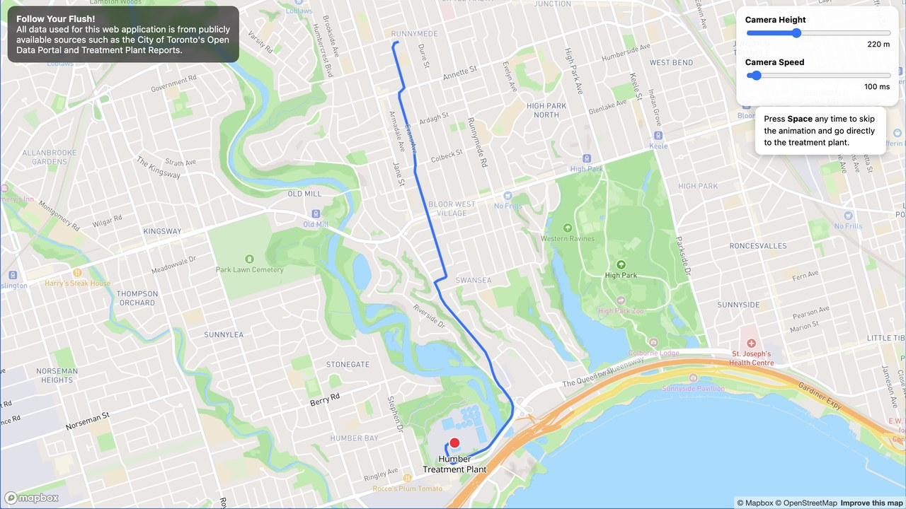
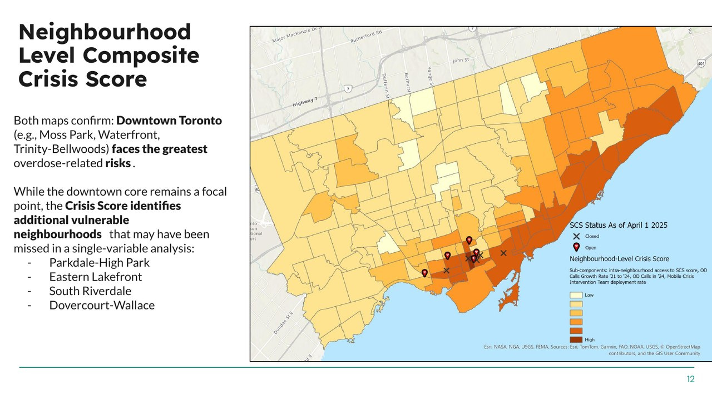
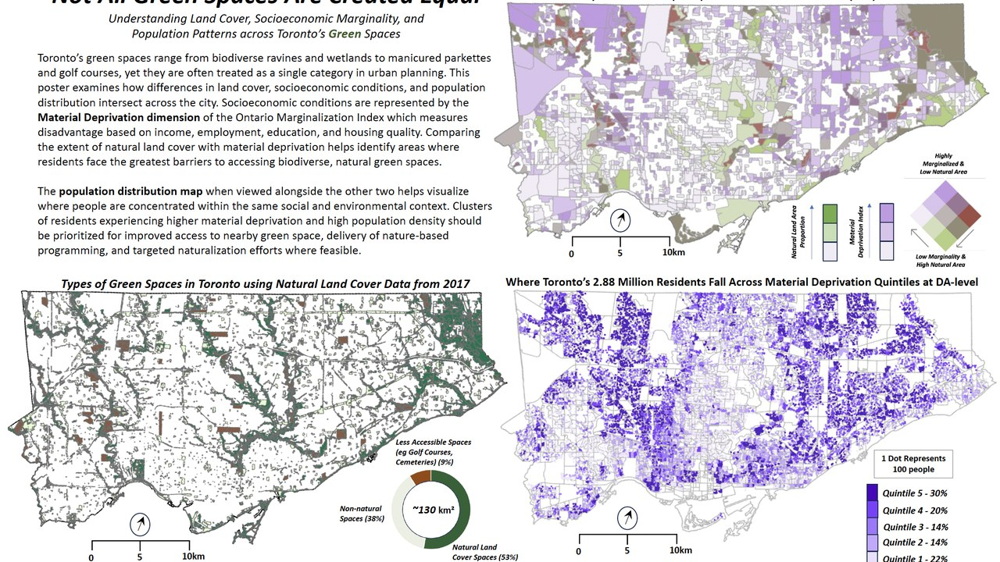
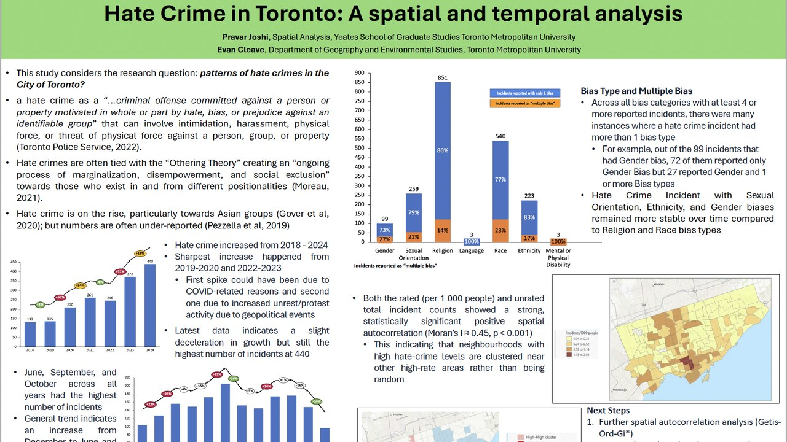
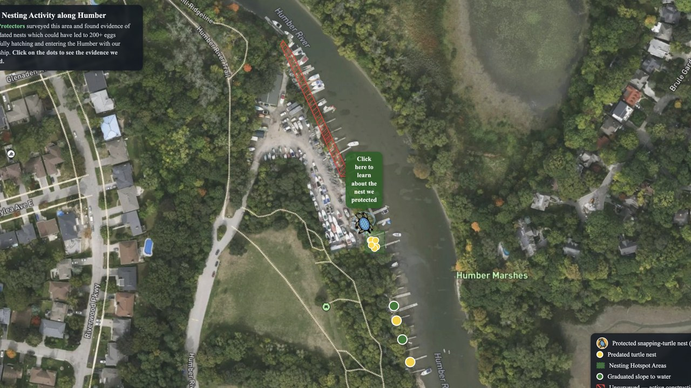

Toronto-based cartographer, data scientist, and developer.
Mapping / GIS: ESRI products (ArcGIS Online and Pro), QGIS, Turf.js, Mapbox GL JS
Software: HTML, CSS, JavaScript
Data analysis: Python (GeoPandas, Matplotlib), R, Excel